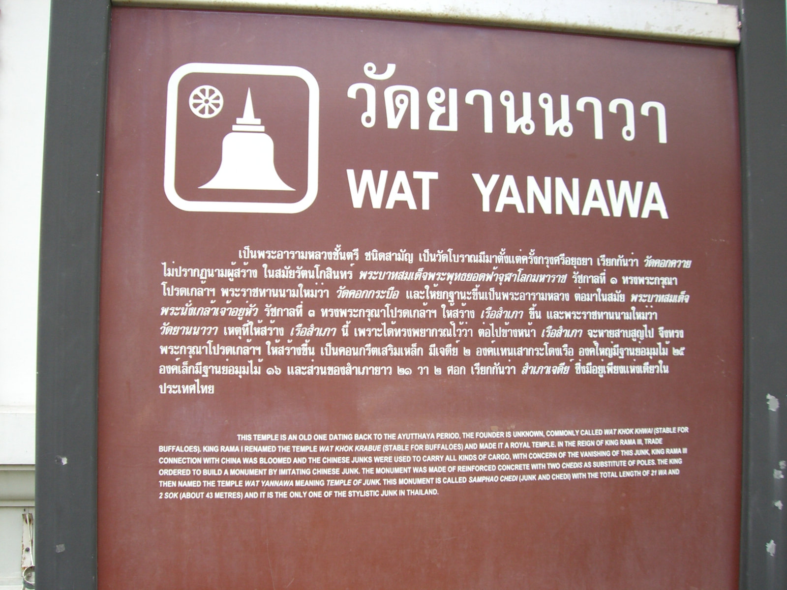
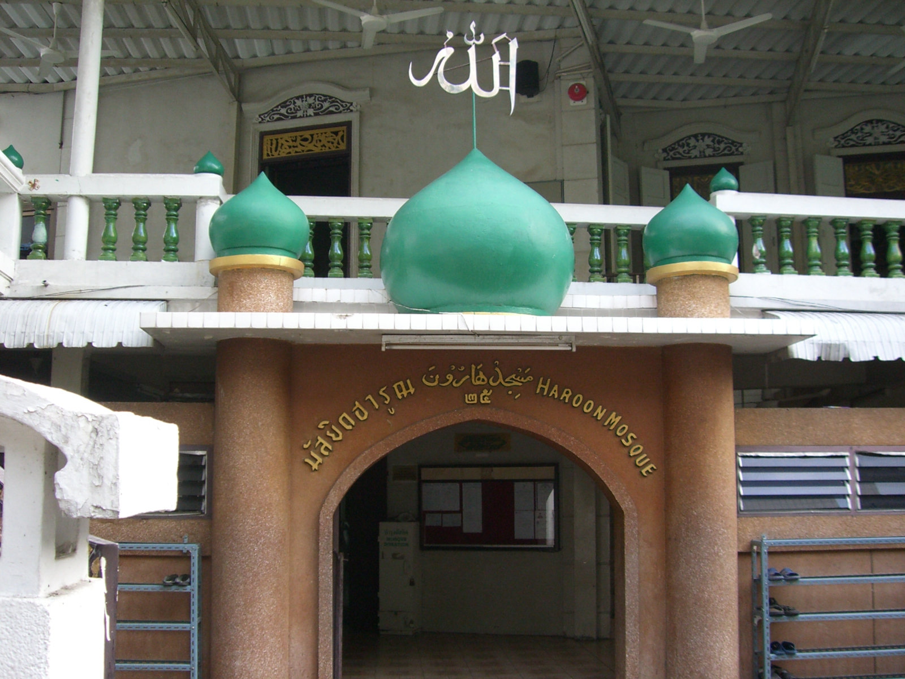

Надеюсь вслед за фильмами "Париж, я тебя люблю" и "Нью-Йорк, я тебя люблю" снимут и фильм "Бангкок, я тебя люблю". Потому что я люблю этот город, люблю его жару, шум, запахи, людскую толчею...
Ну а пока фильм не сняли, разрешите пригласить на еще одну прогулку по Бангкоку, подсказанную все тем же G. Byrne Bracken’ом.
Прогулка называется "Старые европейские кварталы" и проходит вдоль дороги Charoen Krung, как утверждается, первой вымощенной дороги Таиланда. Что впрочем и неудивительно, поскольку она вела от европейский кварталов, куда европейцы перибывали и селились, к королевскому дворцу.
G. Byrne Bracken почему то советует начать прогулку от станции BTS Saphan Taksin, но я начну ее 200-метрами южнее от храма Ват Ян Нава.
[attachment=9637:walk.JPG]
Маршрут прогулки показан на картинке. Начинаем с самой нижней точки и движемся вверх, сворачивая к реке на многочисленные сои
Wat Yan Nawa (วัดยานนาวา) или Храм китайской джонки
Его история

Собственно джонка
Viharn изнутри
Внутри огромное количество артефактов названых "Relics of Shakyamuni", то есть частей тела Будды (мозг, сердце, различные кости), но какой какой то вредный таец тут же начал мне показывать, что снимать нельзя и вышеприведенный снимок - единственный который я успел сделать.
Выходим на улицу
и проходим рынок Bang Rak
Продолжение следует...
Опубликовано: 6 февр. 2010
Идем дальше и свернув налево на Сои 42 обнаруживаем маленький, но очень красивый храм Wat Suan Phu.
Храм примечателен резными орнаментами
"Небоскребы, небоскребы, а я маленький такой"
Идем дальше по Charoen Krung.
Совет мужчинам - не ходите туда с женщинами, неравнодушными к "брюликам" ;-)
Сворачиваем на Сои 40 и идем к реке. Здесь собственно и начинаются следы европейского присутствия.
Assumption Cathedral
Нас приветсвуют
Внутри идет католическое бракосочетание - но в тайском стиле
Выходим обратно на Сои 40. Еще один образчик европейской архитектуры - здание East Asiatic Company.
Возле реки находится отель Mandarin Oriental - один из лучших отелей Бангкока, но с виду ничего примечательного
В комплекс отеля входит ресторан The China House. Как я понимаю, именно его имеют обыкновение посещать "дорогие, пафосные и высокомерные" персонажи ;-). Я со своей хохляцкой рожей зайти внутрь постеснялся ;-)
Продолжение следует...
Опубликовано: 7 февр. 2010
Не выходя обратно на Charoen Krung, проследуем на север маленькой улочкой, которая тянется параллельно реке.
В конце улочки нас ожидает французское посольство, которое является самым старым после португальского консульства зданием в Бангкоке. Увы, я совершаю прогулку в неудачный день - субботу, поэтому посольство закрыто и мне приходится довольствоваться осмотром ворот и примыкающих развалин.
За французским посольством сворачиваем налево и идем к реке.
Удивительно но в этом здании живут люди
По переходам над головой бегают собаки
И выходя к реке обнаруживаем здание старой таможни.
История здания описана здесь
В кратком пересказе она звучит так. "Здание было построенр 1890 году, в годы правления Рамы 5, для того чтобы собирать налог на импорт с приплывающих торговых кораблей. Здание было спроектировано итальянским инженером Красси и на момент постройки было самым современным зданием Бангкока. В 1954 сбор наога был перенесен на территорию Port Authority of Thailand и здание стало выполнять функцию штаба пожарной охраны."
А вот и пожарная охрана
Продолжение следует...
Опубликовано: 10 февр. 2010
Осмотрев старую таможню возвращаемся у французскому посольству. Прямо перед ним расположен маленький мусульманский квартал.
Проходим чуть вглубь этого квартала и свернув налево обнаруживаем мечеть Haroon Mosque. Вот ее история.
Вкратце: Аж 1828 году выходец из Индонезии Toh Haroon Befaden построил здесь одноэтажную деревянную мечеть и стал ее первым имамом. Со временем мечеть стала разрушаться и на ее месте построили новую использовав оригинальные деревянные элементы от первоначальной мечети.
А вот и сама мечеть.

Место для омовений
Забавно, но выходящие посетители, глядя на меня были уверены, что я иду молиться. Они радостно улыбались, и вместе с "Ассалам алейкум" показывали, что нужно одеть шапочку. Я от удивления с ними тоже здоровался и пытался объяснить что молиться я не иду ;-)
Мечеть изнутри
Окончание следует...
Опубликовано: 14 февр. 2010
Уфф, наконец то дошли руки закончить описание маршрута.
Осмотрев мечеть Haroon возвращаемся на Charoen Krung.
На очереди к нас храм Wat Muang Kae. Вообше он виден уже с площадки мечети Haroon
но для того чтобы попасть к нему, надо выйти на Charoen Krung и свернуть на Сои 34. Откровенно говоря мне непонятно чем приглянулся автору маршрута этот храм. Но коль советовали посмотреть - пришлось сделать крюк.
G. Byrne Bracken восхищается вот этим зданием в старом тайском стиле
Мне больше понравились разгуливающие по центру Бангкока петухи
Выйдя на Charoen Krung сразу обнаруживаем здание Главпочтамта (General Post Office). Если какую европейскую архитектуру это здание и напоминает, так это здание какой-нибудь Рейхсканцелярии ;-)
Сворачиваем на Сои 30, улочка узкая но по ней тем не менее умудряются ходить автобусы
А вообще весь квартал - рай для любителя антиквариата
В конце улочки нас ждет консульство Португалии, которое увы закрыто.
Свернув направо мы обнаруживаем улочку Капитана Буша.
Улочка названа в честь английского капитана, который командовала кораблем самого Рамы V. Здесь же когда то располагался его дом, который как я понимаю до наших дней не сохранился.
В конце улочки нас ждет окончание маршрута (надеюcь это не тавтология ;-) - отель Royal Orchid Sheraton и заброшенное здание в неоклассическом стиле напротив него.